——佛祖
——传道书4:12
整数1和2性格温顺、守秩序、表现好，一般由清晰的结构主导，3不是这样。随着整数3，我们跌入了充斥着弹跳数字、混沌动力学和投票悖论的兔子洞。在许多场景中，3代表不可能。但是请放心，在3号门后面你不会找到一只山羊。
3x+1问题
1952年7月21日，英国南部，布莱恩·史威兹为了保持班上小学生的注意力，带他们做题。思索一番后，他想出了一个他们可以琢磨的问题。给定一个小的正整数，重复应用以下规则：
如果这个数是偶数，除以2。如果是奇数，乘以3然后加1。
比如从5开始，这个规则产生出序列5，16，8，4，2，1，4，2，1，4，2，1，……。数字4，2和1无限重复。如果我们从17开始，会产生出序列17，52，26，13，40，20，10，5，16，8，4，2，1，……。史威兹想知道是不是从任意数字开始最终都会进入{4，2，1}循环。答案并不显而易见。从27开始的轨道走得更远，缓慢而曲折，走了111步才到达1（事实上是走了96步才到了27以下），轨道中最大的数字是9232！
是不是所有轨道最终都会到达1？这个问题现在通常称为3x+1问题，也称为考拉兹猜想，不那么知名的说法还包括哈赛算法、锡拉丘兹问题、角谷静夫问题、乌拉姆问题和冰雹问题，因为这个问题在一些大学流行开来，或受一些人引导为人们所熟悉。1960年，日本数学家角谷静夫说，“有一个月耶鲁人人都在研究，没有结果。在我将这个问题介绍到芝加哥大学后，也引发了类似的现象。有一个笑话说这个问题是拖慢美国数学研究的一个阴谋”（拉格尼阿斯，《终极挑战》，p.32）。
虽然史威兹也发现了这个问题，但最初的提出者通常被认为是洛萨·考拉兹。1931年，考拉兹在思考类似3x+1这样的复杂数论函数是如何产生有趣的图形的，由于最初用的函数太复杂，他想找一个更简单但保留了复杂动力学的函数，3x+1问题由此诞生。图3.1的考拉兹树展示了根据这个规则迭代的过程。
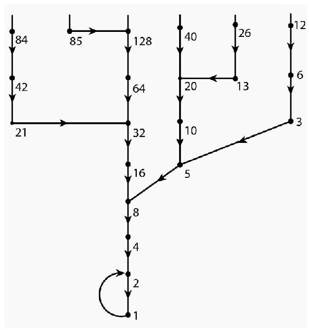
图3.1 考拉兹树
到现在关于3x+1问题已经发表了数百篇文章和两本专著，但是仍未解决。1999年，为了这个问题在德国召开了一次为期两天的会议。事实上，对这个深不可测的问题目前只有很小的进展。这个问题将多个数学领域联系到了一起，包括数论、函数方程、元胞自动机、组合数学、混沌理论和统计力学，但还是没有真正的突破。
如果有人认为在信封背面稍加计算就能找到一个反例，请不要忙着下结论，计算机已经验证到了20×258。如果存在一个不同于{4，2，1}的循环，则已经证明其中必定包含至少数十亿项。密歇根大学的拉格尼阿斯教授是这个问题绝对的权威，他认为这个问题并不适合用传统的“结构”数学进行研究，或者像保罗·厄多斯所说的，“数学还没有准备好解决这样的问题”。
三角形数和保加利亚单人纸牌游戏
一个数怎么会是三角形？不要联想到数字的形状，如果数n可以表示成n=1+2+3+……+k的形式，我们就说n是三角形数。前面几个三角形数是1、3、6、10和15。我们可以想象码放一垛垛硬币的过程，第一垛放一个硬币，之后每一垛都多一枚，堆出来的形状就是三角形。第k个三角形数的一个紧凑表示是k（k+1）/2。图3.2给出了一个可视化证明。
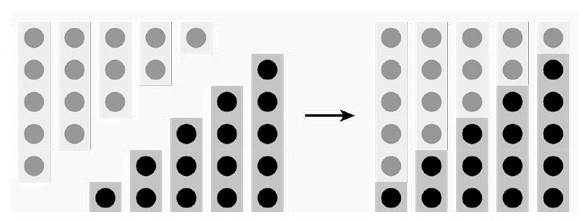
图3.2 1+2+……+k=k（k+1）/2的一个证明（k=5）
三角形数在组合数学中经常出现。我们来看一个纸牌游戏，取一垛N张纸牌，分成几垛，数量不用是一样的，依纸牌多少降序排列这些纸牌垛。现在每垛取一张放到一起组成新的一垛，再从多到少排列纸牌垛，不断重复这个过程。这个游戏称为保加利亚单人纸牌游戏。举个例子，假设有10张牌，最初分3垛，牌的张数是（8，1，1）。迭代一次得到两垛，张数分别是（7，3），之后依次是（6，2，2），（5，3，1，1），（4，4，2），（3，3，3，1），（4，2，2，2），（4，3，1，1，1），（5，3，2），（4，3，2，1），然后就保持不变了。
由于在游戏的过程中牌的总数不变，因此最终必然进入重复的模式。上面的例子是一个定理的特例，这个定理说的是，如果牌的数量是三角形数，N=1+2+……+n，则无论最初怎么分，最后都会变成（n,n-1，……，3，2，1）后停止下来。如果N不是三角形数，则不会停在不变的状态，而是进入循环，例如从N=9开始，最初分成（5，3，1），迭代后依次是（4，3，2），（3，3，2，1），（4，2，2，1），（4，3，1，1），然后又回到（4，3，2）。有人提出猜想，对于固定的N，无论最初如何分，最终都会进入唯一的循环。不过这个猜想是错的，当N=8时，有两种不同的循环：
（3，3，1，1），（4，2，2）
和
（3，2，2，1），（4，2，1，1），（4，3，1），（3，3，2）.
石头、剪刀、布和博罗梅安环
抛硬币、抽签和掷骰子都是广为人知的生成随机数的方法，石头、剪刀、布则带了一些技巧，不是真正的随机。如果你不熟悉也没有关系，这个很容易掌握。两个人同时出拳，可以是三种手势中的一个：石头（拳头）、布（平手掌）或剪刀（手握拳，食指和中指伸出）。决定输赢的规则如下：布赢石头，石头赢剪刀，剪刀赢布。如图3.3所示。
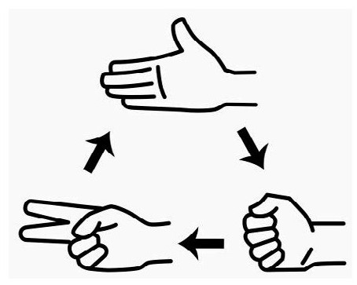
图3.3 石头、剪刀、布的动力学
虽然看规则好像游戏是随机的，其实不然，有经验的老手更容易赢。事实上还有专门的计算机编程比赛，程序需要利用对手的出拳历史采取更好的策略。即便没有计算机，玩的时候也有技巧。例如，根据观察，没有经验的男人通常都是从石头开始，没有经验的女人则通常是从布开始。其中的心理学很有意思。
从数学的角度看，这个游戏也很有意思，因为其中包含了非传递性。每种手势都可以赢一种手势，又输给另一种。这个特性将石头、剪刀、布与一种看似无关的数学对象联系起来：博罗梅安环。在第1章我们看到，纽结可以扭得相当复杂。一组连接的纽结称为链。铁链就是链的简单例子，这更让人混淆，因为它是由多个链接在一起的解结组合而成。显然，链条具有一个特性，如果拿掉一个中间链结，链条就分成了两部分。有一个基本问题是，是否有某种链，除去任意一个纽结，所有部分都会分开。答案是肯定的，这种链称为布鲁尼安链。最简单的布鲁尼安链就是博罗梅安环（图3.4）。
图3.4 博罗梅安环
博罗梅安环由3个解结组成，这些环不是平放在平面上的很厚的环形解结。为什么？请注意环1在环2的上面，环2在环3的上面，环3又在环1的上面。每个环都在一个环的上面，又在另一个环的下面，很显然与石头、剪刀、布一样存在非传递性。
博罗梅安环在多种场合中都有出现，包括宗教符号（佛教和印度教寺庙、基督教的三位一体）和公司商标（图3.5）。名称来源于北意大利的贵族博罗梅安家族，他们的衣服臂章上绣有这个标志。博罗梅安环还与一种古老的编辫法有关。将标准的“马尾”辫的各束头发首尾相连就会形成博罗梅安环（图3.6）。
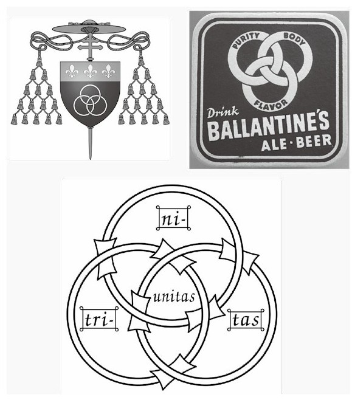
图3.5 衣服臂章（左上）、啤酒商标（右上）以及基督教三位一体标志（下）中的博罗梅安环
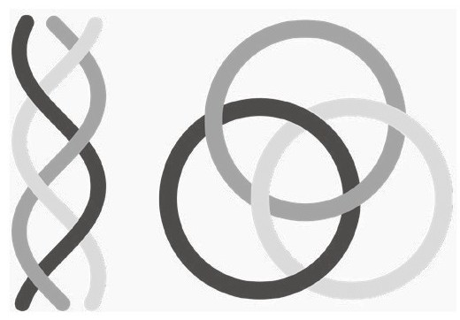
图3.6 辫子与博罗梅安环
随机行走
5岁的莫妮卡住在一条有长长的人行道的街上，有一天，站在家门口的她决定做一个实验。她抛硬币看是正还是反，如果是正，就往北走一步，如果是反，就往南走一步。莫妮卡想看自己最终是否总能回到她的家门口。在研究了很多次后，她发现自己总是会回来，虽然有时候要走很多步。
15年后，莫妮卡雇了她的妹妹阿黛拉做一个更复杂的实验。莫妮卡把车开到城市中的某个地方，城市的街区都是统一的格子形状。在一个十字路口，阿黛拉扔一个有4个面的骰子（正四面体），随机产生1到4中的一个数字。扔出1就往北开一个街区，2往西，3往南，4往东。莫妮卡的问题与人行道问题类似：她总能开回到出发的十字路口吗？同样，答案是肯定的（虽然很费汽油，爸爸也很生气保险杠被撞弯了）。
许多年后，莫妮卡告诉了她的孙子杰吉和昆西人行道和开车的实验，杰吉和昆西觉得他们应该用自己的太空飞船尝试一下类似的实验。杰吉将他的飞船开到电离层的一个固定点，昆西扔一个6个面的骰子，根据结果决定飞船是朝远离地球的方向飞1千米，还是朝着地球飞，或是朝4个水平方向中的某一个飞。飞船总是会回到出发点吗？重复实验的结果很惊人：他们似乎只有1/3的机会回到出发点。杰吉和昆西飞回家，想知道奶奶还有没有更有趣的故事。
这个实验通常称为随机行走，这样的随机运动在许多领域的研究中都有应用，例如分子在液体和气体中的运动，群体遗传学中的遗传漂移现象，在计算机科学中还被用于估计万维网的规模。莫妮卡与她的家人的实验揭示了在不同规模的空间中结果也不同。在一维和二维无穷网格中的随机行走，从某一点出发，几乎可以肯定会回来。三维网格则让人吃惊：回来的概率大约是34%。
三等分角
几何是一门古老的学问，受到了许多古文明的关注，如巴比伦、埃及、印度等，但成就最高的应该是希腊。欧几里得、毕达哥拉斯、泰勒斯和托勒密等人留下的定理和问题启发的研究一直延续到今天。
由古希腊人提出但是没有解决的一个问题是三等分角的问题。只用无刻度的直尺和圆规，如何才能将任意的角三等分呢？二等分角很容易，参见图3.7。
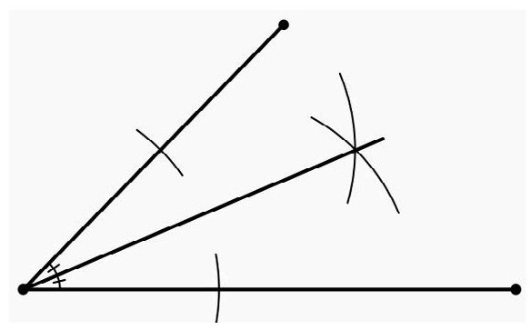
图3.7 用直尺和圆规二等分一个角
三等分角则没那么容易。特定的角——比如直角——可以三等分，但古希腊人做不到三等分任意角。直到1837年，才由皮埃尔·旺策尔证明了——用到了抽象代数，尤其是伽罗瓦理论——只用直尺和圆规三等分任意角是不可能的。
如果允许使用其他工具，三等分问题就可以解决。已经发现了用折纸、刻度尺或环绕圆柱的绳子三等分角的方法。问题的简单性和顽固性激发了许多爱好者寻找初等解法的热情，一些人不接受19世纪的结果，还炮制出了任意角可以被三等分的“证明”。数学家达德利还写了一本娱乐性质的《三分者》（1996）对此进行了描绘。
虽然我们无法三等分角，但并不能阻止人们发现与三等分有关的定理。有一个漂亮的结果——被称为莫莱三分定理——说的是对任意三角形，由三等分线相交成的点组成等边三角形（图3.8）。
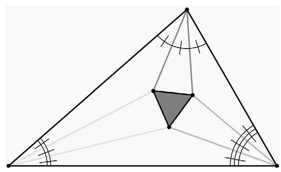
图3.8 莫莱三分定理
1899年发现的这个结果令人敬畏，因此也被称为莫莱奇迹。
三体问题
牛顿万有引力定律有着广泛的应用，在弹道学上也取得了巨大成就，但我们还想考虑规模更大的问题，例如星体之间的相互作用。
在一些情形中，多体问题可以用多个双体问题来近似。如果有一个星体比其他星体大得多——就如太阳与其他行星——就可以认为小星体的运动是受大星体主导，就引力来说，当考虑某一个行星的轨道时，可以认为只有太阳存在。牛顿定律的一个漂亮推论是从数学上证实了开普勒行星运动三定律的观测结果。另一个经典的二体问题是双子星，也就是相互围绕对方运转的恒星，据估计在银河系中有1/3的恒星是双子星或多星系统。
二体问题在数学上已经被解决，不过三体或多体情形的数学则要复杂得多。经典问题包括月球—地球—太阳系统。地球的运动大体上受太阳主导，月球由于靠近地球，因此月球的运动受地球主导，但太阳也有不可忽视的影响。三体问题的一个特殊情形是其中一个星体要比另外两个轻得多，例如，地球、月球和人造卫星组成的系统，对这种情形，数学可以大为简化，从而可以解出方程，这被称为限制性三体问题。
18世纪70年代，法国数学家拉格朗日发现，如果除了两个星体之外其他星体都相对较小，会有一个有意思的结果：在5个点上——称为拉格朗日点或平动点——小星体相对于两个大星体可以保持静止。
图3.9展示了理想的日地系统中的这5个点。点L1是观测太阳的理想位置，因为从不会被地球或月球遮蔽。有几个观测卫星——例如太阳和太阳风层观测卫星——就在这个点附近的轨道上保持静止。类似地，点L2对于需要避开太阳光的空间观测很理想，这个位置也布置了几个观测卫星。点L3不稳定，因为金星每隔20个月就会经过附近，它的引力会导致人造卫星脱位。不过还是有很多科幻小说猜测在这里存在一个“相对的地球”。点L1—L3的存在并不让人惊讶，因为这3个点与两个较大星体共线。点L4和L5是拉格朗日真正的新发现。点L3—L5位于地球的轨道上，并且形成了等边三角形。点L4“领先”地球60度，点L5则“落后”地球60度。在日地系统中，在点L4和L5只有星际尘埃。不过，在太阳—木星系统中，点L4和L5是特洛伊小行星群的质心。第一颗特洛伊小行星在1906年被德国天文学家马克斯·沃夫发现，现今已经发现了超过4000颗特洛伊小行星。
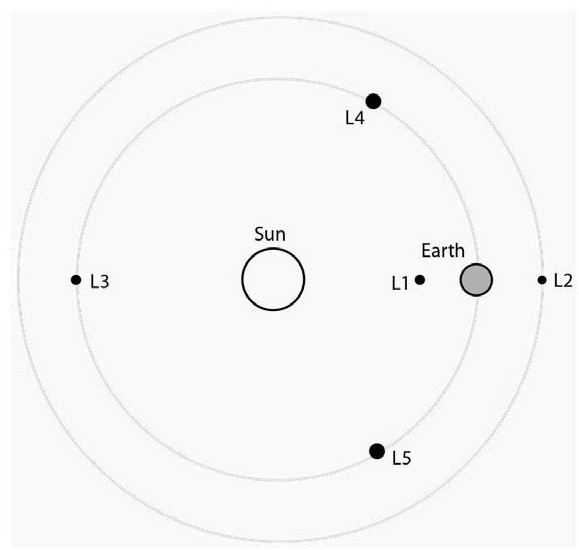
图3.9 平动点
尽管对这些特殊情形有很漂亮的观测结果，解决一般性的三体问题却很难。19世纪末，人们对n体问题的兴趣逐渐高涨，瑞典最著名的数学家哥斯塔·米塔—列夫勒因此建议国王奥斯卡二世为这个问题设立一个奖项。这个奖最终被庞加莱获得，他证明了无穷级数解不适用于三体问题。虽然牛顿方程能建立较短时间内轨道的数值近似——实践中就是这样做的——但庞加莱的研究证明了精确解是不可能的。这项研究是混沌理论的先驱。
洛伦兹吸引子与混沌
气象学家洛伦兹在用数值方法研究大气对流时发现得到的结果让人意外，物理上将这种现象视为薄层状流体在底部被均匀加热在顶部冷却时形成的循环。循环流体呈现出明显的规则模式，称为对流卷。洛伦兹研究的是这种现象的一个简化数学模型，只包含3个变量：对流运动的强度，上升流和下降流的温度差，以及垂直方向温度分布偏离线性的程度，这个值取正数，梯度值最高的地方出现在边界附近。在数学上，这3个量（即x、y和z）随时间变化的函数满足微分方程
其中σ、τ和β是物理常数。给定x、y和z在某个初始时刻的值，这个方程组应当会给出这些变量在未来随时间变化的唯一确定值。
如果一个系统的未来状态由当前状态以及系统的演化规律唯一确定，我们就称之为确定性系统。在动力学中的一个基本问题是确定性系统有怎样的长期行为。洛伦兹发现的结果让人惊讶。
为了熟悉问题背景，我们来思考一下二维情形下类似的数学问题。想象追踪点在平面上的轨道。要求两条不同的轨道不能相交，轨道不能偏离初始点太远。这样的轨道会有怎样的长期行为呢？很容易想到两种可能，点逐渐逼近一个平衡点（保持不动的点）或极限环（过一段时间就重复的环）。1901年被证明的庞加莱—本迪克松定理指出，轨道还有且仅有另一种可能的长期行为：环图，通过轨道相连的一组平衡点。图3.10描绘了这三种极限行为。庞加莱—本迪克松定理在机械学和数学生物学中都有应用。根据轨道不相交得出的这个结论确保了二维系统的行为具有高度结构性。
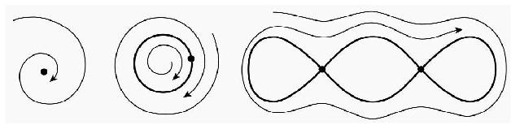
图3.10 逼近平衡点、极限环或环图
现在回到洛伦兹方程，如果给定x、y、z的初始值，轨道在三维空间中延伸，这样的轨道会有怎样的长期行为呢？在三维空间中的行为与庞加莱—本迪克松定理限定的那几种可能性类似吗？洛伦兹遇到了非常怪异的极限集。这个复杂的集合现在被称为洛伦兹吸引子（图3.11），很像圆环，但是细节要丰富得多。邻近区域的点都会被吸进洛伦兹吸引子。这个吸引子本身既包含有序也包含无序，其中有无穷多的圆环，但它们都相互排斥。这个奇怪的集合也包含稠密的轨道，从不重复，但是会无限接近吸引子中的任意点。
为了与庞加莱—本迪克松定理列举的几种平常的可能性进行区分，洛伦兹吸引子这样的集合被称为奇异吸引子。这个怪异的集合是连续系统中混沌的原型。混沌并不罕见，在物理、化学、生物学、电子学和经济学的模型中都有奇异吸引子的出现。
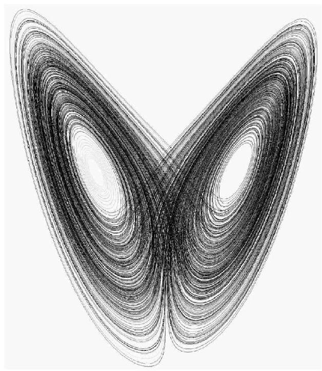
图3.11 洛伦兹吸引子
周期3意味着混沌
物理学一直以来都是数学主要的受益者，力学、电磁学，几乎所有值得一提的理论都用数学的语言给出了漂亮的表述和解释。20世纪数学被谨慎地应用到了经济学和生物学等领域，事情变得更棘手，因为这些新领域研究的现象显然不遵守牛顿运动定律或麦克斯韦方程组这样严格的“定律”。而且，有时候也观察不到明显的有序现象。
以20世纪的人口增长为例。有许多因素影响出生和死亡率——健康习惯、疾病传播、战争、武器的研发、生育控制、宗教和政府的引导，等——数据记录在短时间段上与马尔萨斯增长理论大致相符。马尔萨斯的理论认为人口增长率正比于当时的人口规模。用Pn表示第n年的人口，马尔萨斯模型为
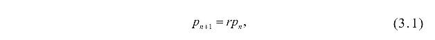
其中常数r＞1。常数r可以解释为前后两年的人口比。与复利类似，人口规模的指数增长每年都会加速，考虑到食品、空气、土地之类的资源限制，这种状况显然无法持续。为了修正这个模型的长期表现，数学家在式（3.1）中又增加了一项：
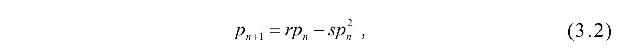
其中常数s＞0。如果Pn太大，则Pn+1＜Pn，因此这个新的人口模型具有固有的自我限制性。含有两个参数（r和s）的式（3.2），可以转化为更简单的只含一个参数的方程：
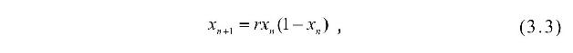
其中r可以是任意正常数。
现在，数学家可以把生物学家推开，研究一下式（3.3）的长期动力学行为。当参数r取不同值时会发生什么？图3.12展示了r取3种值时的动力学，都是从x0=0.5开始，若0＜r＜1，人口会逐年递减直至灭绝；若1＜r＜3，人口会逐渐逼近常数；当r稍大于3，出现了另一个性质变化，人口逼近双周期：在两个不同的值之间交替变化。不过当1＜r＜3时逼近常数的现象并没有消失，只不过不再占主导地位。大多数初始值x0会逼近双周期，但特定的x0会逼近常数。在r增长越过某个阈值后出现的这个性质称为分叉（具体地说是双周期分叉）。如果继续增大参数r，双周期分叉会变成4周期，然后是8周期，不断增多。同样，之前的周期也没有消失，只不过从吸引变成了驱离。当r≈3.57时，周期倍增达到顶点，我们进入了混沌区域。这里的图形和数学都要复杂得多，要在这个新的区域寻找秩序不是那么容易。因此对于0＜r＜4之间的每一个r，都有一个吸引性周期，其他周期则变成驱离性的。
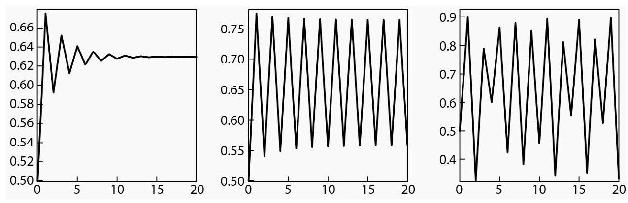
图3.12 r=2.7（左）、3.1（中）、3.6（右）时的动力学
1975年，李天岩和詹姆斯·约克在一篇题为“周期3意味着混沌”的论文中介绍了这个惊人的数学世界。他们发现，如果存在长度为3的周期（无论是吸引性的还是驱离性的），就存在各种长度的周期！3周期是极度复杂的行为的标志。虽然动力学很疯狂，但还是可以发现很纯净的窗口。例如，r≈3.83时存在吸引性的3周期，在混沌的包围中保持着冷静。
星星的图案
数学在很大程度上可以被描述为对模式的探寻。人类喜欢秩序，远在文明出现之前，人们就在星星中寻找模式。数学家用拉姆齐理论在大规模的随机数据集中寻找规律。简单地说，这个领域研究的问题是，“需要存在多少个X类的个体才能显现出模式Y”？
有一个漂亮的结果与整数3有关。柏区定理证明平面上由3N个点组成的集合可以构造出具有共同内点的N个三角形。图3.13给出了一个N=4的例子。
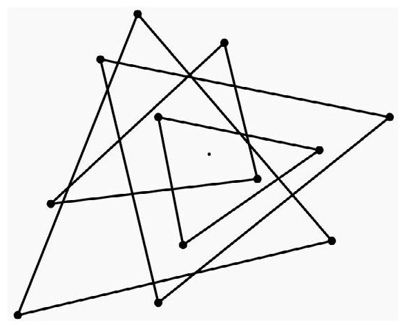
图3.13 用12个点构造出4个有共同内点的三角形
费马大定理
20世纪快结束的时候，一个350年悬而未决的数论问题终于解决了，这个问题就是费马大定理。安德鲁·怀尔斯和他的学生理查德·泰勒给出的证明已经广为人知。数学通常上不了头条，但是每个人都很欣赏这个难题的解决。
我们先来看一个简单的问题。什么样的正整数a、b和c满足等式a2+b2=c2？这是丢番图方程的一个例子，因古希腊数学家丢番图得名，他研究了许多类似的问题。对这个方程，可以用解析的方式写出所有解：
其中m和n是任意正整数，并且a和b可以互换。例如，令m=5和n=2，得到a=21，b=20和c=29。1637年，法国数学家费马思考了与丢番图方程类似但有更大指数的问题：
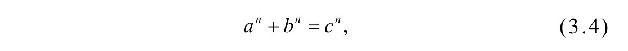
其中整数n≥3。费马认为方程（3.4）不存在正整数解，费马在丢番图的《算术》书的边缘写下了几个数学命题，但没有给出详细的证明。后来的数学家检验了费马的命题，全部都推翻了，但有一个除外，就是这个具有更大指数的问题。欧拉、高斯、狄利克雷等数学大师都曾尝试解决这个问题，但没有取得什么进展。这个问题被人们称为费马大定理。
同许多形式简单但很难解决的数学问题一样，无论是普通人还是专家都能够研究一下费马大定理。为了鼓励解决这个问题，1908年设立了沃尔夫斯凯尔奖，奖金为10万德国马克，许多人都想得到这笔奖金，其后4年里据说出现了1000多个假的证明。虽然许多都是外行的尝试，但也有一些专业数学家因自己发表的“证明”被发现有错误而蒙羞。甚至欧拉和兰姆这样的数学大师也给出了错误的证明（但两人都取得了实实在在的进展，虽然进展不大）。征服费马大定理成为了数学中的王冠。
1984年出现了一个关键性的突破，杰哈德·弗赖指出，如果能够证明谷山—志村猜想，就能够证明费马大定理，谷山猜想是20世纪50年代提出的一个迷人猜想。1986年，两者之间的这种关联被证明，现在只要解决谷山猜想就能够证明费马大定理了。问题是没有人知道怎么证明这个猜想。
知道弗赖关联是对的之后，当时在普林斯顿当教授的英国数学家怀尔斯决定放下其他研究课题，全身心投入对谷山猜想的研究中。这个问题的解决并不是一蹴而就的，在以后的7年时间里，怀尔斯秘密地奋斗于这个问题。之所以要保守秘密，有两个原因，首先，研究这个长期悬而未决的问题很容易被认为是疯子，其次，他也不想被别人抢了先。通常，数学成果都会公开。虽然像IBM或国家安全局这样的政府组织会雇佣数学家做研究，并保护他们的发现，但数学成果一般都会公开发表。怀尔斯想一次性给出最终答案而不是逐步发表进展。
闭门研究多年后，1993年怀尔斯向全世界公布了他的证明，不过在审稿过程中发现了一处似乎无法逾越的错误，在理查德·泰勒的帮助下，怀尔斯绕过了这个错误，1994年修正后的证明最终被接受。怀尔斯和泰勒解释证明的论文有100多页，里面艰深的数学只有少数专家能懂。
虽然这个证明被视为数学大师的杰作，并且影响深远，但还是有一些数学家想知道，“有没有更简单的证明”？目前还没有发现，但100年前有一个有趣的结果与n=3的情形有关，虽然欧拉对这种情形给出的答案更简洁，拉马努金提出的一个有趣定理却为这个问题带来了新的认识。用如下生成函数隐含定义3个序列{an}、{bn}和{cn}：
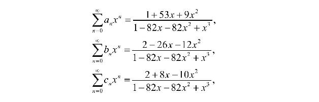
表3.1 拉马努金序列
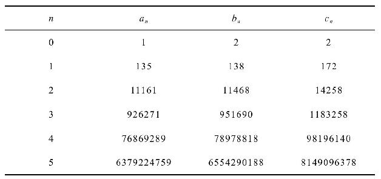
表3.1给出了序列的前几项，拉马努金得到了与这3个序列有关的一个漂亮的公式：
其中n=0，1，2，……。这给出了费马方程的无穷多个“近似解”。人们自然也会好奇对更大n的费马方程是不是也有类似的近似解。
遗漏了谁吗？
没有人会觉得冰箱里的剩菜好看（或好闻），但数学中的剩余，比如除法的余数，却能带来美妙的思想。
有一个被遗忘在冰箱后面的古老结果——但数论学家经常用到——就是费马小定理（不要与费马大定理混淆）。这个定理说的是如果p是素数，a是不包含因数p的整数，则
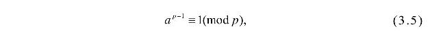
也就是说ap-1除p余数为1，数学上称之为同余关系。这个定理有一个重要的应用是素性测试。给定一个数p，可以证明如果存在一个数a使得关系（3.5）不成立，则p不是素数。例如，28≡4（mod 9），因此9不是素数。如果p对许多a都通过了测试，则p称为伪素数。不过也有组合数p对所有a都满足关系（3.5），这种p值被称为卡麦克数。最小的卡麦克数是561，1994年证明了存在无穷多个卡麦克数。
另一个著名的同余关系是威尔逊定理：p是素数当且仅当（p-1）！≡-1（mod p）。虽然这个结果刻画了素数，但它对素性测试却没有用，因为要计算（p-1）！。除了幂（费马小定理）和因数（威尔逊定理）的同余关系，还发现了一些关于二项式系数的结果。其中一个经典结果是卢卡斯定理：如果p是素数，0≤n且j＜p，则
所有这些同余式都是除以p，不过也有更强的结果是除以p3。例如莫利同余：如果p＞3是素数，则
另一个类似的结果是沃尔斯滕霍尔姆定理：如果p＞3是素数，则
没发现有组合数p满足这个同余式，不知道这个关系是不是也能刻画素数。不要想多了，这个同余关系不能推广到4阶幂，素数的立方还不够刺激吗？
埃及分数
古埃及人认为分子为1的分数——称为单位分数——要比其他分数更“纯”一些，分子大于1的分数有时候被称为庸俗分数。当然，所有庸俗分数m/n都可以写为单位分数之和：将m项1/n相加得到1/n+……+1/n=m/n。古埃及人又增加了一项条件，要求每个单位分数的分母都不同，我们称这种分数为埃及分数。公元前1650年左右的《莱因德数学纸草书》上就有形为2/n的分数的埃及分数表。
所有分数都可以写成埃及分数。有一个办法是递归使用公式
例如，
以及
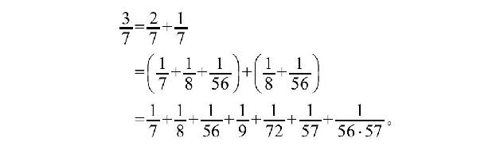
另一个方法是从开始的分数中减去最大可能的单位分数，对余数反复使用这个方法直到余下的是单位分数。例如：
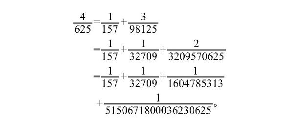
注意每一步余数的分子都在减少。这证明了m/n可以写为最多m项组成的埃及分数。在数学中，这种每一步都跨得尽可能大的方法通常被称为贪婪算法，这种贪婪经常能让人以最少的步数到达目标。虽然方法很容易使用，但有可能产生的项数不是最少的。例如，虽然形为4/n的分数可以被写成4项不同的单位分数之和，下面的例子却可以以多种方式写成3项单位分数之和：
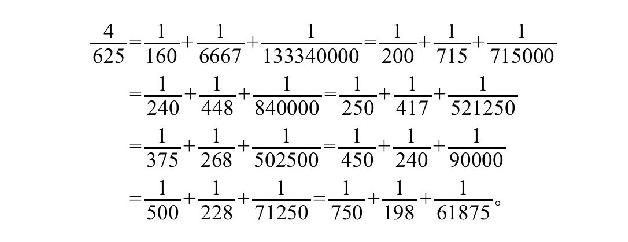
欧德斯猜想提出所有形为4/n的分数都可以写成3项不同的单位分数之和。这个猜想在1948年提出，至今仍未解决。
在前面的例子中，更小分母的一种选择是
这是利用4/5=1/2+1/4+1/20然后每项除以125得到的。这个例子提醒我们，要证明欧德斯猜想，考虑n为素数的分数4/n就够了。为了展示有大量的数都符合欧德斯猜想，有人给出了公式，可以将具有特定结构的n构造成3项单位分数之和。例如，如果n≡2（mod 3），则
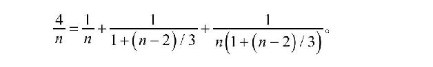
事实上更多类似的结果表明，如果这个猜想存在反例，则必须满足n≡1（mod 24）。
阿罗不可能定理
与混沌理论、三体问题、空气动力学的挑战相比，人们可能会认为投票的数学问题比较容易解决，两个候选人竞争一个位置，票数多的赢就行了。很简单，对吗？但如果是3个候选人混战呢？事情很快会变得复杂。例如，假设因为下雨，体育课有3种室内活动可以选择：篮球（B）、躲避球（D）和排球（V）。同学们决定投票，都吵吵嚷嚷的，老师决定给同学们上一课，让大家体会到投票的微妙之处。
老师首先给同学们发一张纸，让大家依序写下自己的偏好。如果某位同学最喜欢篮球，其次是躲避球，最后是排球，他就写B＞D＞V。表3.2列出了班上同学的偏好。
表3.2 20个人的班级的投票偏好
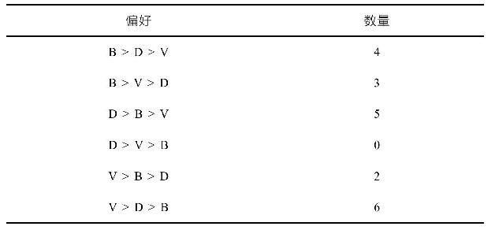
在典型的选举中，通常只考虑投票者的第一选择，这称为简单多数投票，根据这个原则，结果是V：8、B：7、D：5，排球赢。不过在你带上护膝之前，让我们仔细看一下投票数据，除了每个人的第一选择，我们还有更多信息。当老师唱票提到某些项目时，一些同学就会起哄，他们似乎是说有两项运动都可以，但是第三个不行。如果我们不是只记第一位，而是给头两位各一分，这种策略称为非简单多数投票，等同于投票反对各人最不喜欢的选项。结果是D：15、B：14、V：11，躲避球胜出。
不过体育老师没有这样做，他认为非简单多数投票有点不公平，因为投票者的第一和第二选择给了相同的值。更公平的办法是给第一选择2分，第二选择1分，第三选择0分，这个策略称为波达计数法，结果是B：21、D：20、V：19，篮球胜出。
我们发现了什么？有3个或更多“选项”，投票者对选项各有偏好时，不同的投票规则会产生不同的结果。有人可能会认为这只是抽象的数学问题，我们来看一下2000年的美国总统选举，小布什和戈尔竞争，另外还有拉尔夫·纳德。每次的联邦选举除了共和、民主两党，还有许多其他党派的候选人参与，共产党、基督自由党、大麻党，等，但是在2000年，绿党的纳德获得了2.7%的普选投票，实力不俗。评论家认为纳德的支持者主要来自民主党，因此如果不是简单多数投票，戈尔可能会赢。
选举的水比你想象的要浑。在2000年选举的悬空票事件之前，就有人致力于寻找更公平的投票系统。一个惊人的结果是阿罗不可能定理，肯尼斯·阿罗因此获得了1972年的诺贝尔经济学奖。这个定理问的是有没有投票系统能满足一些合理的前提：
没有独裁者：结果不是由某个人的意愿决定。
帕累托最优：如果所有投票者都认为A比B好，结果就应该是A胜过B。
不相干选项的独立性：如果投票者改变A和B以外的其他选项的偏好，应当不影响A和B之间的结果。
阿罗不可能定理证明，如果选项不少于3个，则不存在能同时满足以上所有条件的选举方法。这并不意味着民主的终结，但表明民主过程值得研究。这个领域的学者关心的是某些投票系统是否比其他系统更公平之类的问题。
映射曲面
地球的形状大体上更接近于椭球而不是球。为什么？虽然重力效应倾向于将大的质量块塑造成球体（以减小势能），星球的旋转却会让其沿赤道鼓起。在更小的尺度上，很显然这种球体近似没有抓住耸立的山峰或海底的深谷这样的细节。对地球的表面——或者人的表皮（图3.14）——进行建模需要更多细节。
图3.14 人的三角剖分
要近似一个曲面，先要选定曲面上的许多点，然后，用这些点构造三角剖分。三角剖分用线段将这些点连接到一起，这样曲面就可以用一组三角形近似。所有曲面都可以三角剖分，而且有多种剖分方式。为了构造漂亮的网格，有一种被广泛应用的方法是德洛奈三角剖分。这种方法能将任意三角形中的最小角最大化，从而避免太瘦的三角形。虽然三角剖分能精确近似曲面，但边和转角还是太突兀，为了改进这个问题，可以用函数近似三角形，让它可以平滑连接相邻的三角形，这种平滑函数——称为样条函数——通常是三次多项式。人们对映射曲面的方法做了大量研究，结果足以证明这些方法的成功。
美术馆保安
由于预算削减，一个城市的美术馆不得不减少保安的数量，假设值班的保安固定不动，而美术馆的各部分都必须在某个保安的视线范围之内，要全面守护美术馆，最少需要多少名保安呢？当然，这取决于美术馆的布局。如果是简单的矩形，显然只需要一名保安就够了。如果是有n条边的多边形呢？
很容易构造出n=3k并且需要k名保安的例子。以一条长廊为基础构造k条细长的死胡同分支就行，图3.15给出了一个k=5的例子。这种构造被称为赫瓦塔尔梳子。
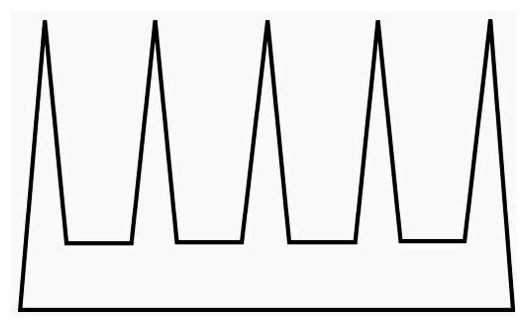
图3.15 这个有15面墙的美术馆需要5名保安
惊人之处在于，美术馆定理证明这就是最差的情形，也就是说，对于有n面墙的美术馆，必需的保安数量不超过
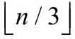
。史蒂夫·菲斯克在1978年给出了一个简洁漂亮的证明。首先进行三角剖分，即在多边形的点之间添加额外的边，让分割出的各部分都是三角形（图3.16）。然后用三种颜色对各点进行着色，让每个三角形都用到每种颜色各一次，这样的着色一定可以做到。最后，找出用得最少的颜色，在这种颜色的点上布设保安，现在每个三角形都有一名保安，从而整个美术馆都得到了守卫。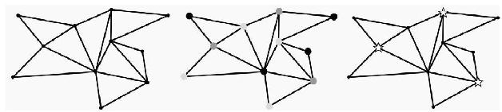
图3.16 三角剖分（左）、着色（中）和选定保安方位（右）
庞加莱猜想
想象一只蚂蚁在油桶的表面爬行。虽然顶部是平的，侧面是弯曲的，但蚂蚁只能感觉到这个很大的面上附近的点，因此对蚂蚁来说油桶表面的每一部分都是平的。表面的“弯曲”——数学家称为弧度——无关紧要，蚂蚁只感觉到平滑的表面。不要嘲笑蚂蚁的无知，事实上，我们也只是在不久前才认识到地球不是平的。这种看似平坦的表面有一个正式的名称：2维流形。
让我们关注特定的2维流形。首先，假设曲面是封闭的，也就是说没有边缘。例如，圆盘有边缘，椭球则没有边缘。其次，假设曲面是单连通的。描述这个特性的一种方式是曲面上的任意环路都能连续变形——保持在曲面上——并收缩为一点。球面就是单连通，但甜甜圈不是（图3.17），图中标出的两个环都无法收缩成一个点。
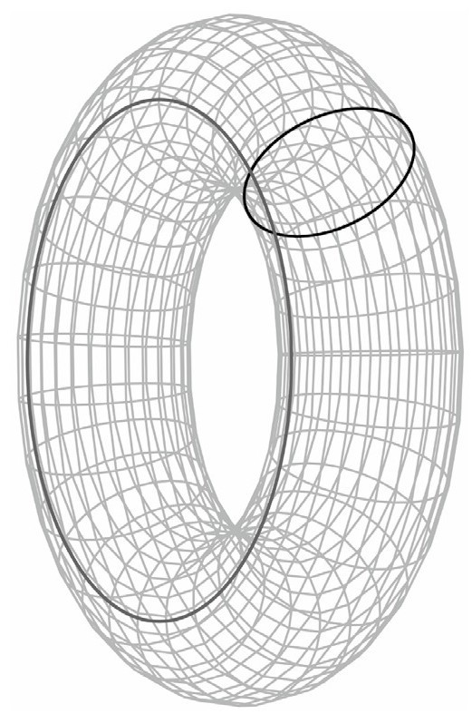
图3.17 圆环面上无法收缩的环
现在可以给出热身的定理：任何单连通封闭的2维流形都是球面。“是”的意思是我们可以将曲面变形——可以拉伸，不能撕裂——为标准球面。换句话说，没有边缘并且任意环路都能收缩成一个点的曲面都是球面的拉伸变形。事实上，有一个定理就是对所有封闭2维流形进行分类，但我们不要偏离主题。封闭2维流形分类的一般性结论可以追溯到19世纪60年代。
20世纪初，庞加莱开始思考一个更难的问题，他对维度更高的3维流形产生了兴趣。这很难描绘，但类似于蚂蚁感觉曲面的每部分都是2维的，3维流形的局部可以认为是3维的。2维球面可以用代数描述为x2+y2+z2=1，3维球体x2+y2+z2+w2=1——我们用x、y、z和w表示4维空间的轴——就是最简单的3维流形的例子。庞加莱想知道是否任何单连通封闭的3维流形都是3维球体，他回答不了这个问题。
数学家如果回答不了某个问题，有时候他们会转向更具一般性的问题，希望能从中获得灵感，这个策略启发了广义庞加莱猜想，针对的是n维流形，其中n≥3。1961年斯蒂芬·斯梅尔证明了n≥5的情形，1982年迈克尔·弗里德曼证明了n=4的情形，只有庞加莱最初的n=3情形一直没有解决。2002年和2003年，俄国数学家格里高利·佩雷尔曼在互联网上贴出了3篇文章证明了庞加莱猜想，《科学》期刊将庞加莱猜想的证明列入2006年的年度突破。
佩雷尔曼的证明以及随后的戏剧性事件备受关注。首先，他的证明不是发表在同行评议的期刊上，而是挂在直接接收科学论文的网站上，没有专家检验，也就没有对他的研究的公开认可。另外，佩雷尔曼被授予2006年的菲尔茨奖——相当于数学界的诺贝尔奖——但他拒绝了，他不想因领奖引起太多关注。佩雷尔曼认为发明了他在证明中使用的那些数学工具的人同样值得获奖。不过还有另一个悬念，庞加莱猜想是克雷数学研究所给出的7个千禧年大奖难题之一。2010年，人们毫不意外地再次听说佩雷尔曼拒绝了这个荣誉（和奖金）。
蒙赫三环定理
有很多几何定理都涉及3个形状，或3者共线之类的。蒙赫三环定理就是其中之一：给定平面上3个半径不同并且不相交的圆，3个圆两两之间共同的切线的交点共线（图3.18）。
这个定理值得关注，因为这个针对2维情形的结论有一个很有意思的3维证明，有时候鸟瞰视角能带来新的认识。将每个圆用半径和中心点相同的球体替代。我们可以将原来的平面视为水面，3个球半浮在水面上。对每一对球体，构造与两球相切的圆锥。圆锥的顶点必定在通过两球中心的直线上，因此必定也在平面上。下面是真正的诀窍所在，想象另一个位于所有球体顶部的平面，这个新的平面必定通过各个圆锥的顶点，由于这个新的平面会与原来的平面相交于一条直线，因此那3个点必定共线。
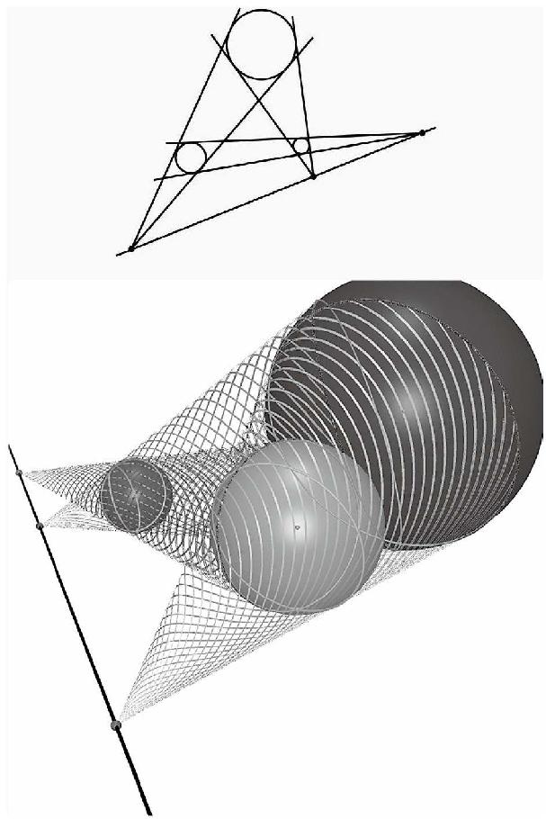
图3.18 蒙赫定理（上）和它的3维证明（下）
马登定理
如果两个人相遇，其中一个人说，“我是数学家”，得到的回应往往不难预料。经过短暂的错愕后，另一个人通常会说，“我的数学一点也不好”。数学家会奇怪同一个人遇到医生时为什么不说，“我对生物学一点也不在行”。数学家还经常遇到另一种回应，“所有的数学不是都已经知道了吗”？每年会发布数千篇数学期刊论文，不断证明新的定理，当然它们都是高度专业化的内容，要想向普通人解释这些几乎是不可能的。不过偶尔还是有一些新的结果既漂亮又相对容易解释，马登定理就是这样一颗宝石，莫里斯·马登1945年在一篇论文中提到了这个结果，但是将其归于乔戈·希贝克81年前的发现。
在叙述马登定理之前，让我们先了解一下背景。多项式的零点与其导数的零点有何关联？函数f（x）=（x-1）（x-2）（x-3）有零点x=1、2、3，而当
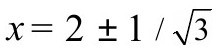
时，f′（x）=0，这两个点大约是2.58和1.42。注意到f′的这两个根位于f的两个根1和3之间。现在将函数平移10个单位，f（x）=（x-1）（x-2）（x-3）+10。这个新函数只有一个实数根，x≈-0.31，但由于f′没有变化，因此根也不变，因此f′的根没有位于f的根之间。是这样吗？让我们考虑f所有的根，而不仅仅是实数根。f的3个复数根约为-0.31和3.15±1.73i。f′的根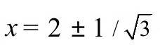
位于f的根围成的三角形之间（图3.19）。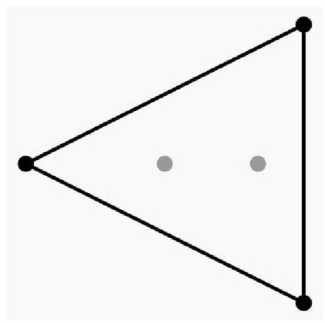
图3.19 f的根围绕着f′的根
这并非巧合，所有3次多项式f都刚好有3个复根，f′则有两个复根。f′的两个根总是位于f的根围成的三角形中间，这是高斯—卢卡斯定理的特例，这个定理说的是对任意多项式f,f′的根都位于f的根围成的凸多边形中间。什么是一个集合的凸多边形？如果连接集合中任意两点的线段也完全位于集合中，则称这个集合是凸的。集合S的凸多边形是包含S的最小凸集，可以将这个凸多边形想象成用橡皮筋围绕集合的点形成的图形，环绕点的集合构成了S的凸多边形。
那马登定理又是什么呢？让我们回到3次多项式f的情形。我们知道f′的根位于以f的根为顶点的三角形中间（排除根共线的情形）。在三角形中构造与3条边中点相切的唯一椭圆（图3.20）。马登定理证明f′的两个根就是这个椭圆的焦点！这个出人意料的结果不需要高深的数学知识就能证明，但也没有简单到数学家可以轻而易举地搞定。2008年有一篇关于马登定理的文章标题是“最了不起的数学定理”。虽然大部分数学家不会同意这么强烈的语气，但毫无疑问这是一个漂亮的结果。仅仅是根被深入研究数百年后这个定理才被发现就够惊人的了。最后还有一个彩蛋，f″的唯一根位于椭圆的中心。
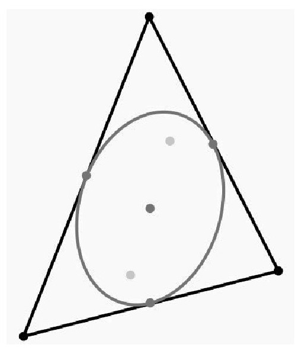
图3.20 马登定理
勒洛三角形
为什么下水道井盖是圆的？自从轮子发明以来，圆盘形就无处不在，但井盖似乎没有什么必要用圆形。井盖也可以是方形，而且也容易制造些。问题是一旦方形井盖被揭开——通常超过50千克重——就很容易掉进洞里去。为了避免掉下去，井盖各个角度的宽度应该设计成一样的，显然圆具有这种特性，因为最大宽度就是圆的直径。各个角度具有相同宽度的形状被称为定宽曲线，最简单的非圆定宽曲线是勒洛三角形（图3.21）。这种曲线以德国工程师弗朗兹·勒洛命名，是由3段圆弧组成的，勒洛三角形的每个“角”都对应圆弧的圆心。巴比埃定理证明等宽曲线的周长等于宽度乘以π。这个面积没有类似的属性。布拉施克—勒贝格定理证明勒洛三角形在具有相同半径的所有等宽曲线中面积最小。
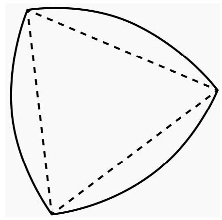
图3.21 勒洛三角形
勒洛三角形有一个机械特性是可以用来钻接近方形的洞。截面为勒洛三角形的钻头当然无法用于标准钻孔，要钻出方形的洞，钻头旋转的同时钻轴也必须沿圆周移动，为了完成这个任务需要特制的钻头夹具。在机械领域，勒洛三角形有时候容易与凡克尔发动机的转子相混淆。
在日常文化中，勒洛三角形被用于标志物，等宽曲线则常被用作一些硬币的形状。英国的20便士和50便士硬币就是有7条“边”的等宽曲线，这种设计是为了便于自动售货机识别。加拿大一元硬币——常被叫做“Loonie”，因为上面印了潜鸟（loon）——和美国的苏珊·安东尼1美元纪念币都是有11条“边”的等宽曲线。图3.22展示了其中3种硬币。
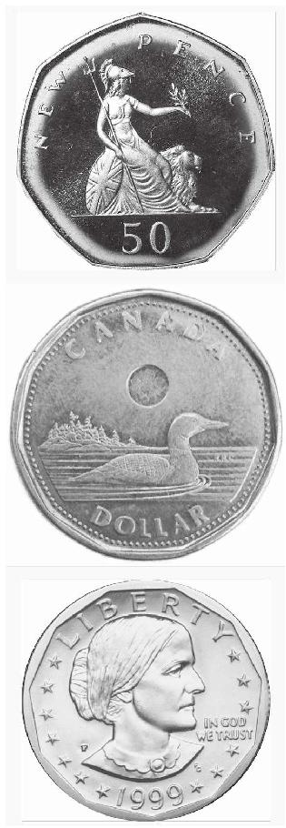
图3.22 等宽硬币：英国50便士（上）、加拿大元（中）和美国苏珊·安东尼1美元纪念币（下）
等宽曲线可以是平滑的，也可以具有任意多个角。如果这样的曲线有角，类似勒洛三角形，则可以通过围着曲线滚动一个圆并沿着路径的外沿得到更平滑的曲线。等宽曲线通常都没有紧凑的解析表达式，但方程
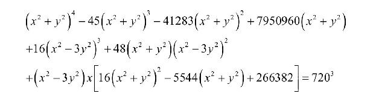
表示一条等宽曲线。
回到井盖的例子，圆形相对于其他等宽曲线仍然具有优势，因为更容易制造，放置的时候也不需要旋转。井盖为什么是圆的的问题在微软的工作面试中很流行。
第三个驻点
对于害怕坐过山车的人，最艰难的部分可能是将要通过第一个高点的时候，因为下坠迫在眉睫。在两个高峰之间肯定有个低谷，单变量连续函数具有这个特性。如果函数有两个局部最大值——函数值不小于任意邻近点的位置——则在两点之间必有一个局部最小值。
两变量函数的类似问题更难。如果连续函数具有两个局部最大值——可以想象成山峰，不仅仅是过山车的侧影——在它们之间必然有局部最小值吗？这个问题问得其实不对，对两变量函数，最大和最小点不是仅有的典型驻点，学微积分的学生知道鞍点也很常见。想一想马鞍的“中心”，从腿放下去的一侧看，中点似乎是最大值，而从前往后看，中点则是最小值。鞍点也可以形象化为可叠放的薯片。
函数f（x, y）=-（x2-1）（x2-2）-y2有两个局部最大点和一个鞍点（图3.23）。你可以将其描绘为两个山峰和穿过它们的一条山脉。要从山脉的一侧爬到另一侧同时高度尽可能的低，可以穿过鞍点，也是路径的最高点。另一方面，要从一个山峰走到另一个山峰同时高度尽可能的高，也会穿过鞍点，这时鞍点是路径的最低点。
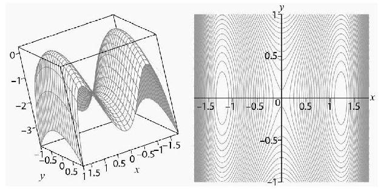
图3.23 f（x,y）=-（x2-1）（x2-2）-y2的曲面和等值线
我们回到三种驻点的问题，正确的问题是有两个局部最大值的函数是否可以没有其他驻点。让人吃惊的是，存在这样的函数，一个例子是
两个局部最大点位于（1，2）和（-1，0），如图3.24所示。由于对于所有点（x,y），函数f（x,y）≤0——你知道为什么吗？——并且f在这两个点等于0，因此它们必定是局部最大点，不存在其他点让函数具有水平切平面。在远离原点的位置，切平面几乎是平的，但并不完全是平的。因此，我们说函数“在无穷大处具有驻点”。这可以进一步探索，但你想尝试比过山车更狂野的东西吗？
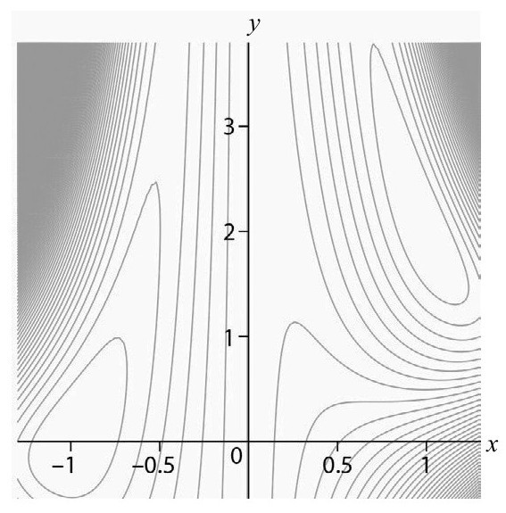
图3.24 f（x，y）=-（x2-1）2-（x2y-x-1）2的等高线
立方和
一个经典公式展示了前n个立方和具有一个漂亮的形式：
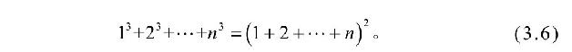
更有趣的是公式（3.6）可以推广。设τ（n）为n的因数数量，例如τ（45）=6，因为45的因数为{1，3，5，9，15，45}。更迷人的等式是
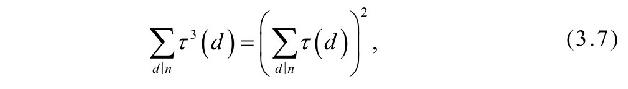
其中求和是针对n的所有因数d。我们再用n=45检验一下。表3.3列出了d的因数数量，其中d本身又是n的因数。
表3.3 45的因数
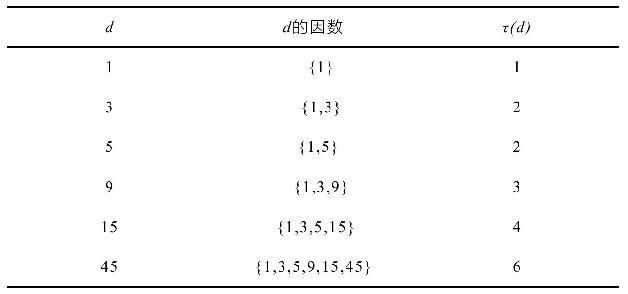
因此
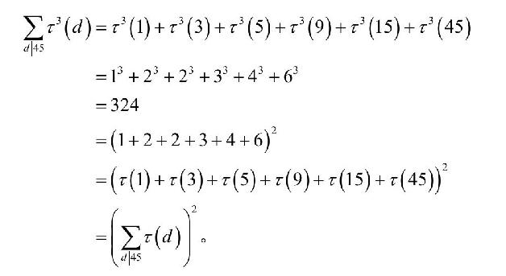
令式（3.7）中的n=2m，则等式简化为式（3.6）。
逼近衰减
用于表示迅速减少的“指数衰减”一词具有精确的数学含义，经常是表示人口数量，意思是衰减速度正比于当前人口数量。用p（t）表示时间t的人口数量，这个意思可以量化为含有比例常数K的微分方程p′（t）=Kp（t）。常数K为负值（如果为正值，就称为指数增长）。满足这个方程的函数的形式为
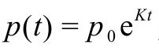
，其中p0是t=0的人口数量。这个方程也用于对放射性衰变建模。微积分成绩好的学生都知道，指数衰减最终会比任何有理函数衰减得更快。我们如何才能用有理函数尽量逼近区间[0，∞）上的指数函数e-x呢？用Rn表示所有阶最高为n的多项式的倒数的有理函数集合，对任意这样的有理函数f（x），可以求出f（x）和e-x的最大差值。现在对所有可能的有理函数，这个最大差值可以保持多小？这个可以用函数
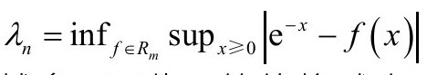
量化。随着n越大，我们拥有的有理函数也越多，因此λn的值将减小。一个有意思的结果与3联系到了一起：